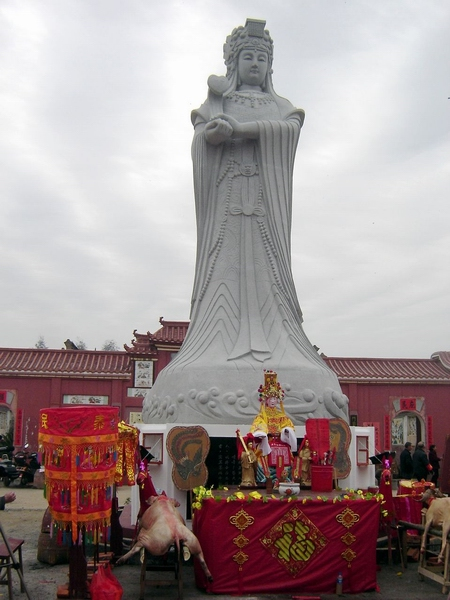
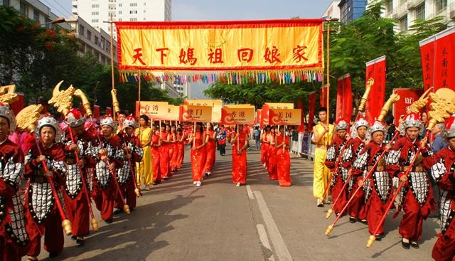
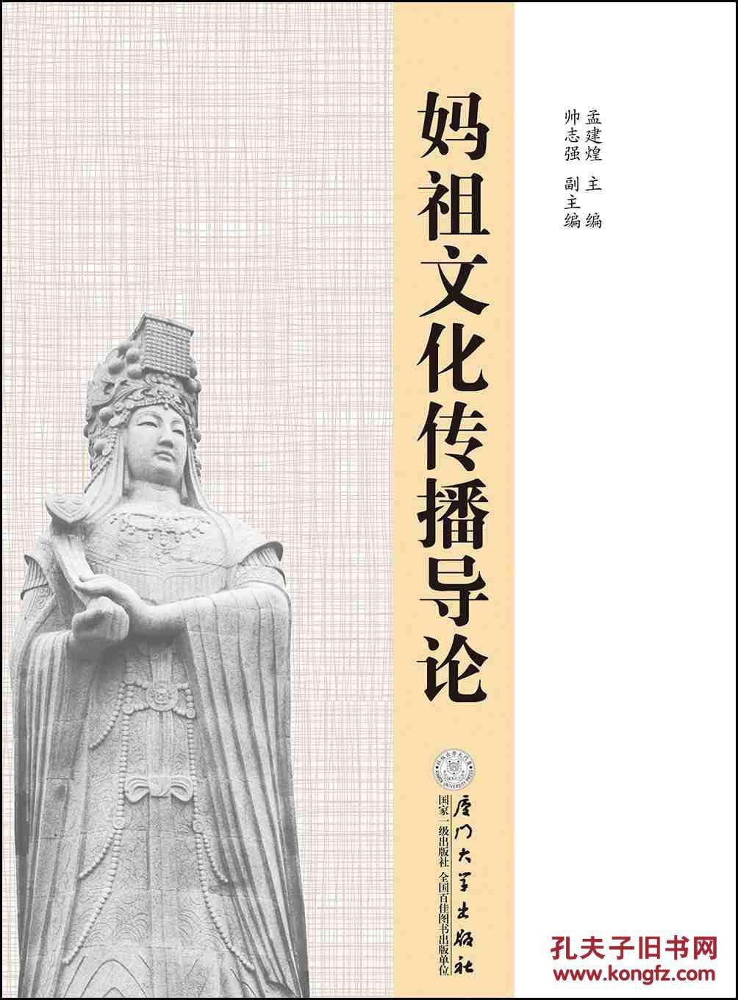

-

春节，有一份来自妈祖故里的邀请函请注意查收！
湄洲岛是妈祖的诞生地，也是东方麦加妈祖祖庙的所在地，还是中国首个信俗类世界非物质文化遗产——《妈祖信俗》的发源地和核心区，更是世界10万人口以下世界节日活动之城。戊戌年将至，妈祖故里邀请你来...
-

北高东皋村：筹资建主题公园，弘扬妈祖文化
2月12日至13日，荔城区北高镇东皋村举行“寨顶山妈祖文化公园”开园仪式暨妈祖像开光庆典活动，记者在采访时看到，该村家家户户张灯结彩，偌大的活动现场锣鼓喧天，彩旗飘扬，充满了浓厚的节日氛围。...
-

正月初三湄洲祖庙将举行戊戌新春祈年大典
戊戌年正月初三（2月18日），湄洲妈祖祖庙南轴线天后殿广场将举行新春祈年大典。祖庙董事会真诚欢迎海内外妈祖信众前来参加祈年祈福活动。祖庙董事会董事长林金榜届时带领五湖四海的游客、信众同谒妈祖，共祈平安。
-

长岛妈祖回“娘家”
南日的妈祖信仰源于宋朝，目前岛上有十座妈祖宫。尖山天后宫妈祖庙，建于宋朝；镜仔妈祖宫，建于明代，其余为清代或是近代所建。西高村卒仔兜的重兴社妈祖宫，始建于清雍正年间，而海山村尖山天后宫原来是在尖山脚下，后来...
-

打造妈祖文化现代传播新高地
2月7日，《中华妈祖》杂志工作会议在妈祖文化研究院召开。会议通报了2017年度《中华妈祖》杂志编辑出版等情况，部署新年度工作，强调要拓宽传统媒体和新媒体融合发展壮大的路子，与时俱进、常办常新，打造妈祖文化现...
-

莆田贤良港天后祖祠观音阁开光
2月4日，莆田贤良港天后祖祠举行两岸妈祖文化交流暨观音阁开光典礼。来自印尼、新加坡等国家以及台、港、澳地区200多家妈祖宫庙和内地300多家妈祖宫庙信众代表逾千名妈祖信众参加开光仪式，影响深远。